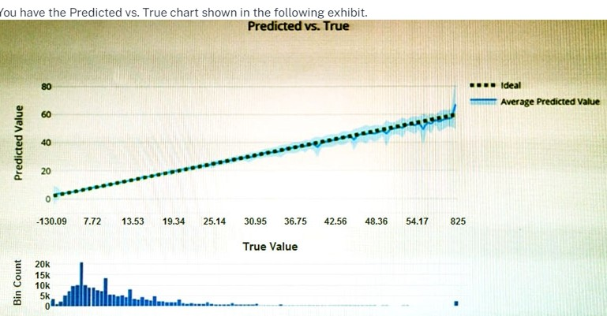
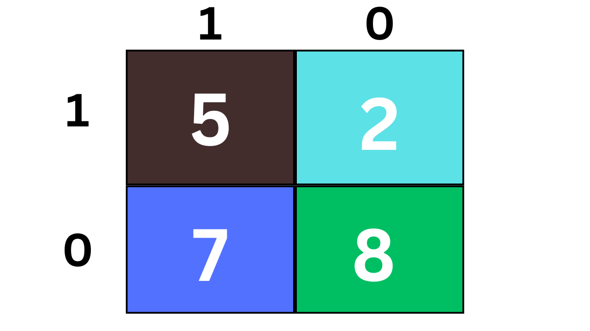

Tech Skill Vocational Institute
Test No 2
1. Which method in Azure provides a drag & drop interface for training your model?
2.Data values that influence the prediction of a model are called:

Which type of model is the chart used to evaluate?
4.You have a dataset that contains information about taxi journeys that occurred during a given period. You need to train a model to predict the fare of a taxi journey. What should you use as a feature?
5.You need to predict the sea level in meters for the next 10 years. Which type of machine learning should you use?
6.Which Languages used in machine learning for write custom code?
7. A banking system that predicts whether a loan Will be repaid is an example or the type of machine learning
8.Predicting how many hours of overtime a delivery person will work based on the number of order received is an example of
9. Automated machine learning implements machine learning solutions without the need for programming experience.

There are [answer choice] correctly predicted positives.
There are [answer choice] False negative.
12.Azure Machine learning designer lets you create machine learning model by
13.How can split data?
14.When training a model, Why should you randomly split the row into separate subset?
15.Organizing documents into groups based on similarities of the text contained in the document is an example of?
16.What type of machine learning should you used to identify group of people who have similar purchasing habbits?
17. Predict whether a student will complete a university course?
18. Which layer used to enter data in artificial neural network?
19.Which activation function most commonly used in artificial neural network of deep learning?

Calculate Accuracy using confusion metrices?.